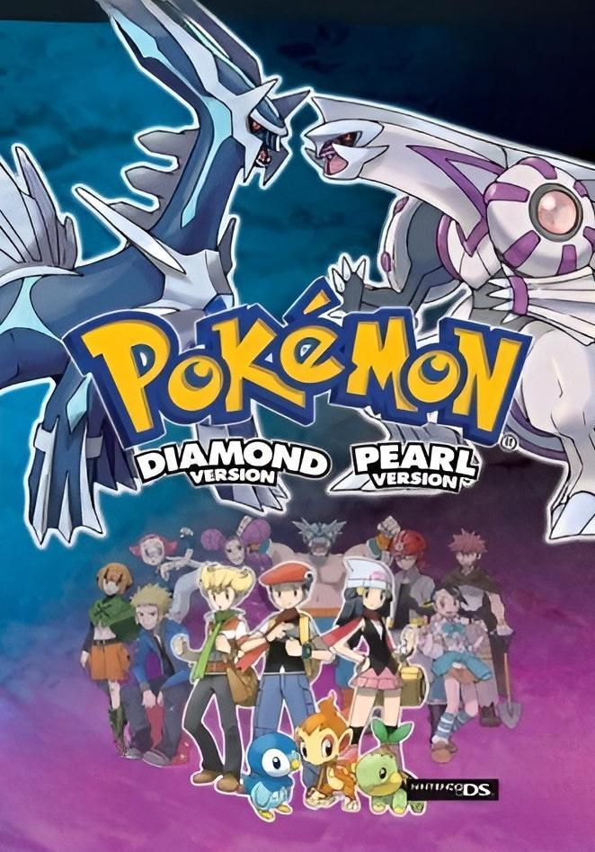

Videojuegos
Hasta abril de 2025, la franquicia Pokémon cuenta con más de 120 videojuegos oficiales. Estos se dividen en varias categorías, pero en esta página solo nos enfocaremos en:
Los juegos principales de Pokémon:
Pokémon Rojo y Verde (Japón, 1996)
| Pokémon Rojo y Pokémon Verde (ポケットモンスター 赤 Pocket Monsters Aka y ポケットモンスター 緑 Pocket Monsters Midori en japonés) son los primeros videojuegos de Pokémon de la historia, el primer paso que dio esta saga para convertirse en lo que es hoy en día. Pokémon Verde salió junto a Pokémon Rojo en 1996 para la consola portátil de la época, Game Boy. Estos videojuegos nunca salieron de Japón, en el resto del mundo Pokémon Azul fue la encargada de acompañar a Pokémon Rojo. | |
Pokémon Edición Rojo y Azul (1996, Japón / 1998, internacional)
| Pokémon Edición Roja y Pokémon Edición Azul fueron los primeros juegos de Pokémon que se lanzaron fuera de Japón, estando disponibles en Norteamérica el 28 de septiembre de 1998, en Australia y Nueva Zelanda el 23 de octubre de 1998 y en Europa el 5 de octubre de 1999. En Norteamérica, ambos siguieron de cerca el debut del doblaje en inglés de la serie animada , que comenzó a emitirse el 8 de septiembre de 1998, y en un año, Pokémon era bien conocido como una franquicia popular de Nintendo. | |
Pokémon Amarillo (1998)
| Pokémon Yellow: Special Pikachu Edition (en español: Pokémon Edición Amarilla: Edición Especial Pikachu), conocido en Japón como: Pocket Monsters Pikachu (ポケットモンスターピカチュウ Poketto Monsutā Pikachū, lit. Monstruos de Bolsillo Pikachu), es la tercera edición (cuarta en Japón) de los primeros videojuegos de Pokémon del género RPG para Game Boy. Es muy similar a Pokémon Red y Blue. Fue lanzado el 12 de septiembre de 1998 en Japón, y conocido como Pocket Monsters: Pikachu, sin utilizar el color amarillo como identificativo. Popularmente es conocido como "Pokémon Show" por basarse algo más a la serie de televisión, que salió después de los primeros videojuegos. |  |
Pokémon Oro y Plata (1999)
| Pokémon Oro y Pokémon Plata (Pokémon Gold y Pokémon Silver en inglés, ポケットモンスター 金 Pocket Monsters Kin y ポケットモンスターム 銀 Pocket Monsters Gin en japonés) son los videojuegos RPG de Pokémon para consola portátil pertenecientes a la segunda generación. La reedición que salió después es Pokémon Cristal. También llamados "Pokémon Edición Oro" y "Pokémon Edición Plata", con estos videojuegos se añadió un total de 100 Pokémon más a los anteriormente capturables, mediante la aparición de una nueva región (Johto). |  |
Pokémon Cristal (2000)
| Pokémon Crystal Version es un videojuego de rol desarrollado por Game Freak y publicado por Nintendo para Game Boy Color , lanzado en Japón en diciembre de 2000 e internacionalmente a lo largo de 2001. Sirviendo como una edición mejorada de los títulos de 1999 Pokémon Oro y Plata , es la entrada final en la segunda generación de la serie de juegos Pokémon. |  |
Pokémon Rubí y Zafiro (2002)
| Pokémon Rubí y Pokémon Zafiro (Pokémon Ruby y Pokémon Sapphire en inglés; ポケットモンスター ルビー Pocket Monsters Ruby y ポケットモンスター サファイア Pocket Monsters Sapphire en japonés) son los primeros videojuegos de Pokémon de la tercera generación. También llamados "Pokémon Edición Rubí" y "Pokémon Edición Zafiro", aparecieron en español el 25 de julio de 2003, siendo las primeras ediciones de Pokémon para Game Boy Advance, contando así con una calidad gráfica superior a sus antiguas ediciones y novedades en lo que se refiere al entrenamiento de los Pokémon, una región nueva, Hoenn, y también nuevos Pokémon, en concreto 135 nuevas especies. |  |
Pokémon Rojo Fuego y Verde Hoja (2004)
| Pokémon Rojo Fuego y Pokémon Verde Hoja (Pokémon FireRed y Pokémon LeafGreen en inglés, ポケットモンスター ファイアレッド Pocket Monsters FireRed y ポケットモンスター リーフグリーン Pocket Monsters LeafGreen en japonés) son las versiones reeditadas de los juegos originales Pokémon Rojo y Pokémon Verde (Rojo y Azul fuera de Japón), con las novedades de los juegos para Game Boy Advance de Pokémon Rubí, Pokémon Zafiro y Pokémon Esmeralda. También llamados "Pokémon Edición Rojo Fuego" y "Pokémon Edición Verde Hoja", ambas ediciones fueron lanzadas a las tiendas europeas el 1 de Octubre de 2004. Aunque estas ediciones sean los remakes de Pokémon Rojo y Pokémon Verde, se consideran de la tercera generación, incluían además un conector inalámbrico. | |
Pokémon Esmeralda (2004)
| Pokémon Edición Esmeralda es un videojuego de rol de 2004 desarrollado por Game Freak y publicado por The Pokémon Company y Nintendo para Game Boy Advance . Se lanzó por primera vez en Japón en 2004 y posteriormente a nivel internacional en 2005. Es la quinta versión, después de Pokémon Rubí y Zafiro y Pokémon Rojo Fuego y Verde Hoja , y el último juego de la tercera generación de la serie de videojuegos Pokémon. |  |
Pokémon Diamante y Perla (2006)
| Pokémon Diamante y Pokémon Perla (Pokémon Diamond y Pokémon Pearl en inglés, ポケットモンスター ダイヤモンド Pocket Monsters Diamond y ポケットモンスター パール Pocket Monsters Pearl en japonés), son los primeros videojuegos de la cuarta generación de Pokémon y el primer dúo de videojuegos RPG para Nintendo DS1. También llamados "Pokémon Edición Diamante" y "Pokémon Edición Perla", fueron lanzados en Japón en septiembre del 2006. Tuvieron el lanzamiento más exitoso de las otras generaciones de Pokémon en Japón, y la mejor semana de lanzamiento de cualquier videojuego de Nintendo DS. Tienen el récord de ser los segundos videojuegos más vendidos de su consola. |  |
Pokémon Platino (2008)
| Pokémon Platino (Pokémon Platinum en inglés; ポケットモンスター プラチナ Pocket Monsters Platinum en japonés), también llamado "Pokémon Edición Platino", es la edición superior del dúo Pokémon Diamante y Pokémon Perla. Pocos días después de su lanzamiento en Japón, se vendieron alrededor de un millón de copias, convirtiéndose en el videojuego más rápidamente vendido de la historia para Nintendo DS en aquel momento1. El 22 de marzo de 2009 salió a la venta en Estados Unidos y en España salió el 22 de mayo del mismo año. | |
Pokémon HeartGold y SoulSilver (2009)
| Pokémon Oro HeartGold y Pokémon Plata SoulSilver (Pokémon HeartGold y Pokémon SoulSilver en inglés; ポケットモンスター ハートゴールド Pocket Monsters HeartGold y ポケットモンスター ソウルシルバー Pocket Monsters SoulSilver en japonés) son dos videojuegos de Pokémon pertenecientes a la cuarta generación para la consola Nintendo DS. Se trata de los remakes de los videojuegos de la segunda generación, Pokémon Oro y Pokémon Plata. | |
Pokémon Blanco y Negro (2010)
| Pokémon Negro y Pokémon Blanco (Pokémon Black y Pokémon White en inglés, ポケットモンスター ブラック Pocket Monsters Black y ポケットモンスター ホワイト Pocket Monsters White en japonés) son dos videojuegos de Pokémon pertenecientes a la quinta generación. Fueron anunciados oficialmente por la web oficial de Pokémon en Japón el día 9 de abril de 2010. Se conoce que salieron a la venta el 18 de septiembre del 2010 en Japón. |  |
Pokémon Blanco 2 y Negro 2 (2012)
| Pokémon Negro 2 y Pokémon Blanco 2 (Pokémon Black 2 y Pokémon White 2 en inglés, ポケットモンスター ブラック２ Pocket Monsters Black 2 y ポケットモンスター ホワイト２ Pocket Monsters White 2 en japonés) son dos videojuegos pertenecientes a la quinta generación y secuela de Pokémon Negro y Pokémon Blanco. Fueron anunciados el 26 de febrero de 2012 en el programa de televisión japonés Pokémon Smash!. |  |
Pokémon X y Y (2013)
| Pokémon X y Pokémon Y, conocidos en Japón como Pocket Monsters X&Y (ポケットモンスター X&Y Poketto Monsutā Ekkusu & Wai), son dos videojuegos de RPG y aventura, desarrollados por Game Freak y distribuidos por Nintendo para la consola portátil Nintendo 3DS, que fueron lanzados el 12 de octubre de 2013 tanto en Japón como en América, Europa y Australia. Pertenecen a la serie de videojuegos Pokémon, e inauguran la sexta generación de la misma. Fueron anunciados el 8 de enero de 2013 durante el Pokémon Direct por Satoru Iwata, presidente de Nintendo. |  |
Pokémon Rubí Omega y Zafiro Alfa (2014)
| Pokémon Rubí Omega y Pokémon Zafiro Alfa (Pokémon Omega Ruby y Pokémon Alpha Sapphire en inglés, ポケットモンスター オメガルビー Pocket Monsters OmegaRuby y ポケットモンスター アルファサファイア Pocket Monsters AlphaSapphire en japonés) son dos videojuegos que pertenecen a la sexta generación y los remakes de Pokémon Rubí y Pokémon Zafiro. Su salida a nivel mundial se programó para el mes de noviembre de 2014. Estos videojuegos están desarrollados para Nintendo 3DS pero también son compatibles con Nintendo 2DS. | |
Pokémon Sol y Luna (2016)
| Pokémon Sol y Pokémon Luna (Pokémon Sun y Pokémon Moon en inglés, ポケットモンスター サン Pocket Monsters Sun y ポケットモンスター ムーン Pocket Monsters Moon en japonés) son dos videojuegos pertenecientes a la séptima generación anunciados para las consolas de la familia de Nintendo 3DS. Fueron anunciados en el Pokémon Direct del día 26 de febrero de 2016, y salieron a la venta el 18 de noviembre de 2016 en Japón, América y Australia, y el 23 de noviembre del mismo año en Europa. |  |
Pokémon Ultrasol y Ultraluna (2017)
| Pokémon Ultrasol y Pokémon Ultraluna (Pokémon Ultra Sun y Pokémon Ultra Moon en inglés, ポケットモンスター ウルトラサン Pocket Monsters UltraSun y ポケットモンスター ウルトラムーン Pocket Monsters UltraMoon en japonés) son el segundo dúo de videojuegos principales de la séptima generación, desarrollados para la familia de consolas Nintendo 3DS, sucediendo a Pokémon Sol y Pokémon Luna. Fueron anunciados primeramente en un Pokémon Direct presentado el 6 de junio de 2017 y lanzados a nivel mundial el 17 de noviembre de 2017 con la posibilidad de seleccionar entre nueve idiomas. |  |
Pokémon: Let's Go, Pikachu! y Let's Go, Eevee! (2018)
| Pokémon: Let's Go, Pikachu! y Pokémon: Let's Go, Eevee! (ポケットモンスター Let’s Go! ピカチュウ Pocket Monsters: Let's Go! Pikachu y ポケットモンスター Let’s Go! イーブイ Pocket Monsters: Let's Go! Eievui en japonés) son dos videojuegos principales pertenecientes a la séptima generación para la consola Nintendo Switch. Se basan en el videojuego de la primera generación Pokémon Amarillo, aunque aportando ciertas novedades a la experiencia, por lo que pueden considerarse como remakes de este.Fueron anunciados el 30 de mayo de 2018, y lanzados a nivel mundial el 16 de noviembre de 2018. |  |
Pokémon Espada y Escudo (2019)
| Pokémon Espada y Pokémon Escudo (Pokémon Sword y Pokémon Shield en inglés; ポケットモンスター ソード Pocket Monsters Sword y ポケットモンスター シールド Pocket Monsters Shield en japonés) son un dúo de videojuegos principales pertenecientes a la octava generación, desarrollados para la consola Nintendo Switch. Fueron anunciados el 27 de febrero de 2019 a través de un Pokémon Direct y su día de lanzamiento a nivel mundial fue el 15 de noviembre del 2019. | |
Pokémon Diamante Brillante y Perla Reluciente (2021)
| Pokémon Diamante Brillante y Pokémon Perla Reluciente (Pokémon Brilliant Diamond y Pokémon Shining Pearl en inglés; ポケットモンスター ブリリアントダイヤモンド Pocket Monsters BrilliantDiamond y ポケットモンスター シャイニングパール Pocket Monsters ShiningPearl en japonés) son dos videojuegos principales pertenecientes a la octava generación para la consola Nintendo Switch. Se trata de los remakes de los videojuegos de cuarta generación, Pokémon Diamante y Pokémon Perla. En estas ediciones solo aparecen Pokémon de la primera a la cuarta generación, como en los videojuegos originales (excepto las formas regionales de estos Pokémon, que no aparecen). Los videojuegos fueron anunciados el 26 de febrero de 2021 por la celebración del 25 aniversario de Pokémon, y fueron lanzados a nivel mundial el 19 de noviembre de 2021. |  |
Leyendas Pokémon: Arceus (2022)
| Leyendas Pokémon: Arceus (Pokémon Legends: Arceus en inglés; Pokémon LEGENDS アルセウス Pokémon LEGENDS Arceus en japonés) es un videojuego perteneciente a la octava generación, desarrollado para la consola Nintendo Switch. Fue anunciado oficialmente el 26 de febrero de 2021 a través de una presentación Pokémon Presents y su día de lanzamiento a nivel mundial fue el 28 de enero del 2022. Se trata de una precuela en la historia de Pokémon Diamante Brillante y Perla Reluciente, situándose en la región feudal de Hisui, la Sinnoh de antaño. |  |
Pokémon Escarlata y Púrpura (2022)
| Pokémon Escarlata y Pokémon Púrpura (Pokémon Scarlet y Pokémon Violet en inglés; ポケットモンスター スカーレット Pocket Monsters Scarlet y ポケットモンスター バイオレット Pocket Monsters Violet en japonés) son los videojuegos de la línea principal que inauguran la novena generación. Fueron anunciados para la Nintendo Switch el 27 de febrero de 2022 en el Pokémon Presents y su lanzamiento a nivel mundial fue el 18 de noviembre del 2022. |  |
Leyendas Pokémon: Z-A (Anunciado para 2025)
| Leyendas Pokémon: Z-A1 (Pokémon Legends: Z-A en inglés; Pokémon LEGENDS Z-A en japonés) es un videojuego perteneciente a la novena generación, desarrollado para la consola Nintendo Switch y con una versión para la Nintendo Switch 2. Fue anunciado oficialmente el 27 de febrero de 2024 a través de una presentación de Pokémon Presents y su fecha de lanzamiento a nivel mundial tendrá lugar a finales de 2025. Es el primer juego de la saga principal en contar con traducción al español de Hispanoamérica. También es el primer juego de la saga principal en tener una versión para distintas consolas fuera de la Consola virtual. |  |